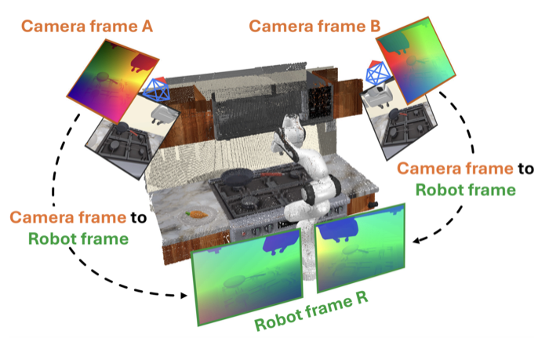
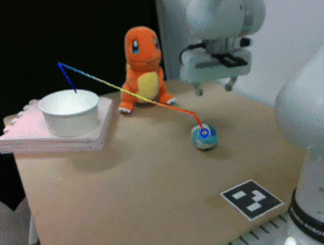
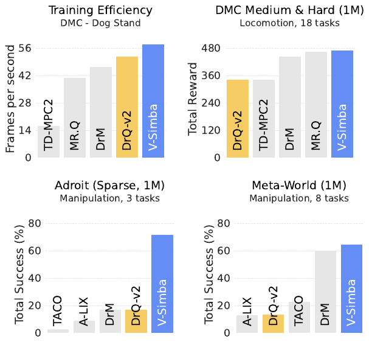
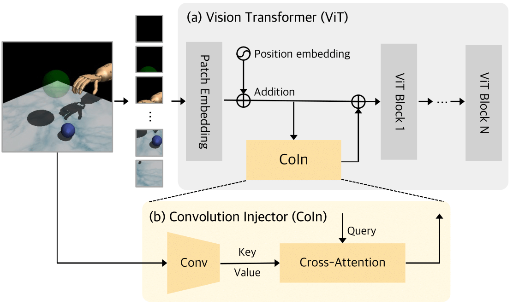
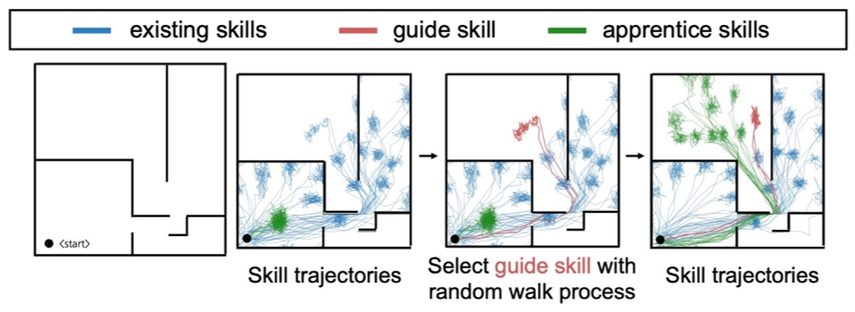
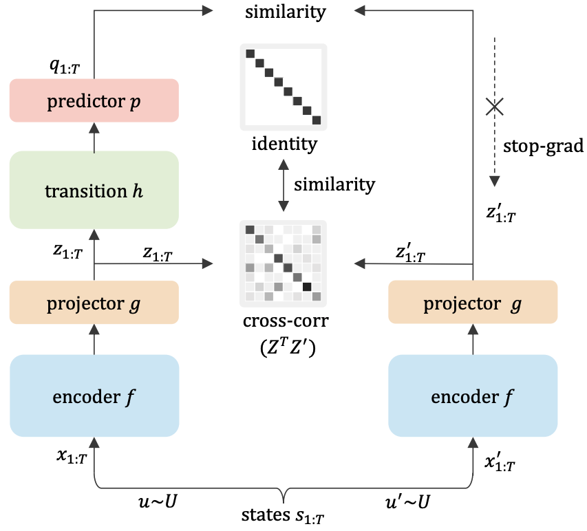
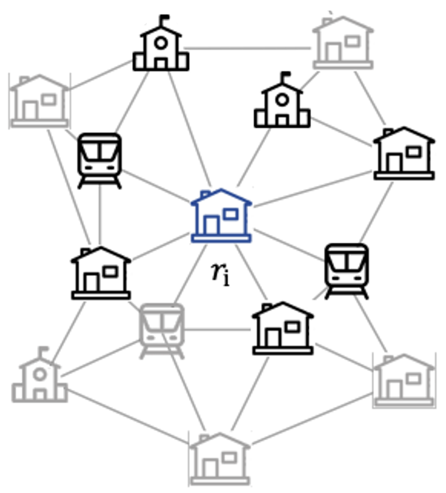

Publications

Byungkun Lee*, Dongyoon Hwang*, Dongjin Kim, Hojoon Lee, Minho Park, Jaegul Choo. (* Equal contribution)
Preprint.
[Paper] [Project Page]
A VLA observes the scene in the camera frame but acts in the robot frame. Robot-centric pointmaps close this gap by giving every pixel its 3D position in the frame where actions are defined.

Dongyoon Hwang*, Byungkun Lee*, Dongjin Kim, Hyojin Jang, Hoiyeong Jin, Jueun Mun, Minho Park, Hojoon Lee, Hyunseung Kim, Jaegul Choo. (* Equal contribution)
IROS'26.
[Paper] [Code] [Project Page] [HF Models]
A hierarchical VLA framework that guides low-level action policies with 3D trajectory predictions.

Donghu Kim, Youngdo Lee, Hojoon Lee, Johan Obando-Ceron, Byungkun Lee, Aaron Courville, Pablo Samuel Castro, Jaegul Choo, Clare Lyle.
RLC'26.
[Paper]
A simple yet effective neural network architecture for deep RL in visual continuous control, matching or outperforming state-of-the-art methods across DMC, Adroit, and Meta-World while being more computationally efficient than DrQ-v2.

Hyunseung Kim, Byungkun Lee, Hojoon Lee, Dongyoon Hwang, Donghu Kim, Jaegul Choo.
NeurIPS'24.
[Paper] [Project Page] [Bibtex]
A skill discovery algorithm that learns diverse behaviors while following the behaviors in "do" videos while avoiding the behaviors in "don't" videos.

Donyoon Hwang*, Byungkun Lee*, Hojoon Lee, Hyunseung Kim, Jaegul Choo. (* Equal contribution)
ICML'24.
[Paper] [Code] [Project Page] [Bibtex]
A simple add-on module which injects convolutions into pretrained ViTs for Visuo-motor Control.

Hyunseung Kim*, Byungkun Lee*, Hojoon Lee, Dongyoon Hwang, Jaegul Choo. (* Equal contribution)
NeurIPS'23.
[Paper] [Code] [Project Page] [Bibtex]
An unsupervised skill discovery algorithm, which addresses the limited exploration of previous algorithms through explicit guidance.

Hojoon Lee, Koanho Lee, Dongyoon Hwang, Hyunho Lee, Byungkun Lee, Jaegul Choo.
ICML'23.
[Paper] [Code] [Poster] [Bibtex]
We present a visual pre-training algorithm grounded in self-predictive learning principles tailored for reinforcement learning.

Hojoon Lee*, Hawon Jung*, Byungkun Lee*, Jaegul Choo. (* Equal contribution)
CIKM'23 (short).
[Paper] [Code] [Poster] [Bibtex]
We construct a real estate appraisal framework that integrates spatial and temporal aspects, validated using a dataset of 3.6M real estate transactions in South Korea from 2016 to 2020.

Hojoon Lee*, Dongyoon Hwang*, Hyunseung Kim, Byungkun Lee, Jaegul Choo.
WWW'22.
[Paper] [Code] [Poster] [Bibtex]
We gathered data from 280,000 matches played by the top 0.3% rank players in Korea for League of Legends. From this, we developed DraftRec, a personalized champion recommendation system aimed at maximizing players' win rates.
Work Experience
- RL-based robotic grasping
- Mentor: Joonho Lee
Other activities
- Travel Award ($3,000 as awards), Crevisse Partners, 2023.
- Silver Prize ($2,000 as awards), Korea University Graduation Project, 2019.
- National Science & Engineering Scholarship ($4,000 as awards), Korea Student Aid Foundation, 2018.
- 1st Prize in Samsung Electronics Service Design Project, Samsung Electronics, 2014
- Pre-training for Intelligent Agent . RL Korea, Seoul, Jan 2024.
- Pre-training for Intelligent Agent . Crevisse Partners, Seoul, Dec 2023.
Template based on Jon Barron's website.